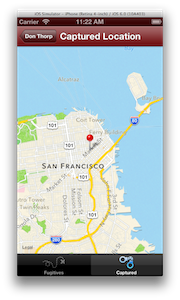

Lab - Geolocation & Mapping
Mission: To modify the TiBountyHunter to determine the user's location, save that info to the database, and plot the location on a map.
Specification: In this lab, you will modify the TiBountyHunter app you worked on in the preceding lessons. When the fugitive is captured, you'll grab the lat/long coordinates and save them to the model. On the details page for captured fugitives, you'll add a map button that will open a native map window plotting the capture location.
To successfully complete this lab, you must develop an application that meets the following description:
- Obtains a one-time location for the user when he or she taps the Capture button on the detail screen.
- Uses the Android 'simple' technique for geolocation configuration.
- Shows a 'View on Map' button on the details window of captured fugitives.
- Clicking the View on Map button will display a map plotting the recorded location for fugitives who have been captured.
| 1. Download the starting code for this lab from S3: 10_geolocation and unzip the files. Import the project into Titanium Studio. Update the tiapp.xml, if necessary (e.g. to set an appropriate SDK version or build target for your environment). | |
| 2. In the FugitiveDetail.js controller, update the capture button's event listener. Specify the geolocation purpose of 'Tracking down criminal scum' and add an if/then block that determines if location services are enabled. If they are not, output an error message to the user. | |
| 3. Within the if/then block, set the location to ACCURACY_HIGH (Android) or ACCURACY_BEST (iOS). Then, add a getCurrentPosition() call. | |
| 4. Within the getCurrentPosition() call, add an if/then block that tests for a geolocation error. Because such an error would most likely happen on Android when running within the emulator, alert a message reminding the user to set a location within their Android emulator. | |
| 5. Within the "no errors block" of the getCurrentPosition() call, create a reference to the model (args.data) and set its capturedLat and capturedLong properties to the values returned by the geolocation function. To simplify this lab, we will avoid some careful error checking and handling; put your set("captured", 1) statement within the getCurrentPosition() function for the case where no geolocation error was encountered. | |
| In a real world app, you'd probably want to still mark the fugitive as captured if the user denies the geolocation request. As written, the app will simply display an error. In reality, you'd want to mark the fugitive captured and set either default lat/long coordinates or handle the missing coordinates when the user later tries to view the map. | |
| 6. Add an alert() message that informs the user that he or she has successfully captured the fugitive. Then, add a statement to close the detail window. However, on Android, use a 2-second pause before closing the window. | |
| On Android, alert dialogs are modal to the window that opened them; on iOS they are modal to the app. If you didn't add the pause on Android, users would never see the alert because it would disappear as the window closes. | |
| 7. Add a MapDetail view, style, and controller. In the view, define a window with an id of mapWindow that contains a map view with an id of mapView. In the tss file, set the window title to Captured Location and bar color to #6d0a0c. Set the map view to a standard map type, set animate and regionFit to true, and userLocation to false. Also assign the map an empty array of annotations. Finally, in the controller, define an annotation for the bounty's latitude & longitude. Use their name as the annotation title with a subtitle of 'busted'. Add the annotation to the map. Then, define the map's region to be centered on the bounty's lat/long with delta values of 0.1 degrees. | |
| 8. Back in the FugitiveDetail controller, add a click handler to the map button. If the capturedLat property exists and isn't empty, use getController() to instantiate the 'MapDetail' controller, passing the model data. Then, open that controller's associated view by calling the parentTab's open() method. | |
| 9. Save all the files you have changed. Build your app for the iOS simulator or Android emulator. Make sure to permit the location detection (if running on iOS) so that the lat/long can be determined. Correct any problems that exist. | |
Summary
In this lab, you captured the user's location using Titanium's geolocation functions. You saved that data to the model and used it to display a map noting where the fugitive was captured.
Resources
- API docs: Geolocation http://docs.appcelerator.com/titanium/latest/#!/api/Titanium.Geolocation
- API docs: Map View http://docs.appcelerator.com/titanium/latest/#!/api/Titanium.Map
- Guides: Tracking Position and Heading http://docs.appcelerator.com/titanium/latest/#!/guide/Tracking_Position_and_Heading
- Finished code for this lab: S3: 10_geolocation (finished)